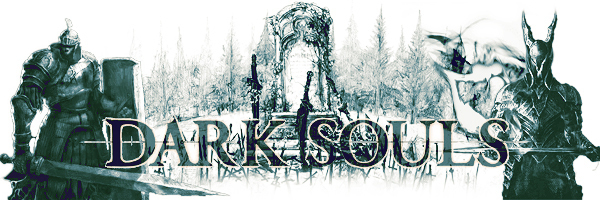

Contribua com a Wiki
A comunidade de Dark Souls sempre foi movida pela descoberta. Compartilhe teorias, informações e ideias para expandir SoulArchive.
Entre em contato com a SoulArchive Wiki para enviar sugestões, teorias, feedbacks e contribuições sobre Dark Souls.

A comunidade de Dark Souls sempre foi movida pela descoberta. Compartilhe teorias, informações e ideias para expandir SoulArchive.
Não. SoulArchive é um projeto independente feito por fãs.
Sim. Sugestões de lore, bosses, builds e mapas são bem-vindas.
Sim. O objetivo é expandir continuamente a wiki com novas páginas, artigos e guias completos.